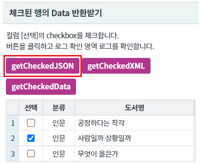
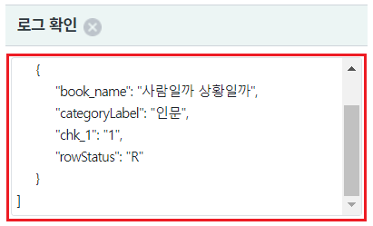
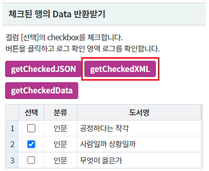
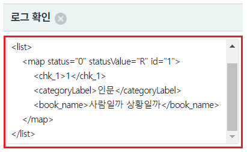
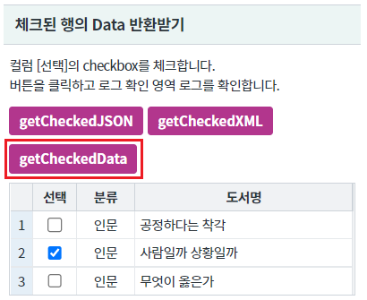
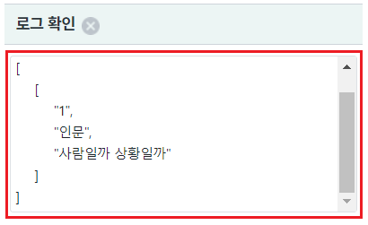

[GridView] inputType이 checkbox로 지정된 열의 체크된 행의 Data 반환받기
1개요
GridView의 컬럼 속성 inputType이 checkbox일 때, checkbox가 체크된 행의 데이터를 반환 받는 예제입니다.
데이터 유형별 아래의 함수를 사용할 수 있습니다. - JSON 배열 : getCheckedJSON - XML : getCheckedXML - 2차원 배열 : getCheckedData //행 단위로 컬럼의 value가 배열로 담깁니다.
2구현된 기능
체크된 행의 Data 반환받기 - JSON, XML, Array
3예제 테스트 방법
3.1체크된 행의 Data 반환받기 - JSON
- STEP1. 영역 [체크된 행의 Data 반환받기]의 버튼 getCheckedJSON을 클릭합니다.
[브라우저(Chrome) 실행 예시]

- STEP2. 반환된 Data를 확인합니다.
영역 [로그 확인]의 textarea 또는 브라우저 개발자 도구의 콘솔에 JSON 문자열이 출력됩니다.
[브라우저(Chrome) 실행 예시 - 로그 확인]

[반환 데이터 예시]
//체크된 행의 데이터가 JSON으로 반환되어 배열에 담깁니다. [ { "book_name": "사람일까 상황일까", "categoryLabel": "인문", "chk_1": "1", "rowStatus": "R" } ]
3.2체크된 행의 Data 반환받기 - XML
- STEP1. 영역 [체크된 행의 Data 반환받기]의 버튼 getCheckedXML을 클릭합니다.
[브라우저(Chrome) 실행 예시]

- STEP2. 반환된 Data를 확인합니다.
영역 [로그 확인]의 textarea 또는 브라우저 개발자 도구의 콘솔에 JSON 문자열이 출력됩니다.
[브라우저(Chrome) 실행 예시 - 로그 확인]

[반환 데이터 예시]
//체크된 행의 데이터가 XML로 반환됩니다.
<list>
<map status="0" statusValue="R" id="1">
<chk_1>1</chk_1>
<categoryLabel>인문</categoryLabel>
<book_name>사람일까 상황일까</book_name>
</map>
</list>3.3체크된 행의 Data 반환받기 - 배열
- STEP1. 영역 [체크된 행의 Data 반환받기]의 버튼 getCheckedData을 클릭합니다.
[브라우저(Chrome) 실행 예시]

- STEP2. 반환된 Data를 확인합니다.
영역 [로그 확인]의 textarea 또는 브라우저 개발자 도구의 콘솔에 JSON 문자열이 출력됩니다.
[브라우저(Chrome) 실행 예시 - 로그 확인]

[반환 데이터 예시]
//체크된 행의 데이터가 배열로 반환되어 배열에 담깁니다. [ [ "1", "인문", "사람일까 상황일까" ] ]
4구현 예시
4.1체크된 행의 Data 반환받기 - JSON
원하는 시점에 GridView의 함수 getCheckedJSON를 이용하여 스크립트를 작성합니다.
[소스 코드 예시]
//예제 파일에서는 스크립트 scwin.btn_ex1_onclick에 작성되어 있습니다. var objData; //GridView grd_exam1의 컬럼 chk_1의 체크된 행의 데이터를 JSON으로 반환 받기 //파라미터는 컬럼의 id와 indexd를 사용할 수 있습니다. 일반적으로 id를 사용합니다.(index는 컬럼이 추가/삭제되면 변경되기 때문입니다.) objData = grd_exam1.getCheckedJSON("chk_1");
4.2체크된 행의 Data 반환받기 - XML
원하는 시점에 GridView의 함수 getCheckedXML를 이용하여 스크립트를 작성합니다.
[소스 코드 예시]
//예제 파일에서는 스크립트 scwin.btn_ex2_onclick에 작성되어 있습니다. var objData; //GridView grd_exam1의 컬럼 chk_1의 체크된 행의 데이터를 XML로 반환 받기 //파라미터는 컬럼의 id와 indexd를 사용할 수 있습니다. 일반적으로 id를 사용합니다.(index는 컬럼이 추가/삭제되면 변경되기 때문입니다.) objData = grd_exam1.getCheckedXML("chk_1");
4.3체크된 행의 Data 반환받기 - 배열
원하는 시점에 GridView의 함수 getCheckedData를 이용하여 스크립트를 작성합니다.
[소스 코드 예시]
//예제 파일에서는 스크립트 scwin.btn_ex3_onclick에 작성되어 있습니다. var objData; //GridView grd_exam1의 컬럼 chk_1의 체크된 행의 데이터를 2차원 배열로 반환 받기 //파라미터는 컬럼의 id와 indexd를 사용할 수 있습니다. 일반적으로 id를 사용합니다.(index는 컬럼이 추가/삭제되면 변경되기 때문입니다.) objData = grd_exam1.getCheckedData("chk_1");
5주요 API
getCheckedJSON( colIndex )
getCheckedXML( colIndex )
getCheckedData( colIndex )
6참고 문서
[웹스퀘어5 SP5 개발 가이드] GridView
링크 : https://docs1.inswave.com/sp5_user_guide/bc10c1b82c9a2a0b#e1c4658baf7e726f
[웹스퀘어5 SP5 개발 가이드] GridView inputType="checkbox"
링크 : https://docs1.inswave.com/sp5_user_guide/86bdcf48029b958b#3e94eba8977de29e
[웹스퀘어5 SP5 개발 가이드] GridView inputType="checkbox" 혹은 inputType="radio" 열에서 체크한 행의 인덱스 및 데이터 확인
링크 : https://docs1.inswave.com/sp5_user_guide/86bdcf48029b958b#7c6e0da78d6d4f6a
7참고 동영상
GridView inputType="checkbox" 혹은 inputType="radio" 열에서 체크한 행의 인덱스 및 데이터 확인
링크 : https://youtu.be/zsfXnqs-j6Q